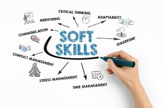

Summary
Highly driven progressive thinker and meticulous individual committed to amass as much enlightenment as possible to provide solutions to problems encountered in everyday activities.
Education

Bachelor of Science: Computer Science
Al-Qalam University, Kastina State ( 2015-01/2018-03)
Ordinary National Diploma: Computer Science
Lagos State Polytechnic, Lagos State ( 2009-03/2011-11)
Work experience

IT Technical Support Engineer (10/2022-09/2024)
System Facts Limited. 20 Ziguinchor Street, Off IBB Way Zone 4 Wuse Abuja Federal Capital Territory.
- Provided Tier 1 IT support to non-technical internal users through desk side support services.
- Resolved diverse range of technical issues across multiple systems and applications for users.
- Handle support requests from employees and resolve their IT-related issues, including user setup, file-sharing software and hardware installation, network connectivity, printing, e.t.c

Technical Support Engineer/ E-Operator(04-2021/10-2022)
NNPC (NAPIMS)-Guildford Service Limited. N0 23b Cairo Street, Wuse 2 Abuja Federal Capital Territory.
- Monitored operational and security procedures for numerous computers in network, related systems administration and maintenance protocols.
- Maintained televising equipment in good operating condition by adjusting, cleaning and performing minor repairs. & used incident reporting software such as Victor and VideoEdge to track daily activities.
- Used incident reporting software such as Victor and VideoEdge to track daily activities.
- Resolved diverse range of technical issues across multiple systems and applications for users.
Election Poll Worker (02/2019 -02/2019)
Independent National Electoral Commission ( INEC Nigeria), Benin City, Edo State (Adhoc Staff).
- Addressed voter questions and concerns.
- Posted signs, instructions and statutory notices for incoming voters to see.
- Marked elector numbers and ballot paper numbers in corresponding registers.

Technical Assistant (03/2012 – 10/2014)
Nigeria Customs Service, Abuja, Federal Capital Territory (Industrial Training).
- Installed technical hardware and software in desk side support environment.
- Provided Tier 1 IT support to non-technical internal users through desk side support services.
- Evaluated security measures and made recommendations to network administrator for upgrades and changes.

Soft Skills
- Communication skills.
- Excellent problem-solving and analytical skills.
- Strong attention to detail and ability to work effectively in a fast-paced environment.
- Ability to work collaboratively in a team and independently as required.
Additional Skills

- Technical Support Engineer.
- Desktop Support Technician.
- System Troubleshooting.
- Computer Maintenance and Repair.
- Network issues.
- System Administrator.
- Closed-Circuit Television Installation (CCTV).
- CCTV Gadget Administrator and Maintenance.
- Satellite Installation (Broadcast and Data).
- Telecommunication Installation.
- Manual Testing.
- Automation Testing Tool: (Selenium).
- Programming Language: (Python).
- Bug Tracking System: JIRA.
- Testing Management Tool: (Zephyr).
- Performance Testing Tool: (Apache Jmeter).
- Application Programming Interface (REST API): (POSTTMAN).
- Agile Management System: (JIRA).
- Database Management System: (MySQL).
- Java Script Object Notation (JSON).
- Version Control System: (GitHub).
- Cross Browser: Lambda Test.
LANGUAGES
- English: Fluent
- Yoruba:Fluent
Awards
Access Maintenance Officer
Muslim Corpers’ Association of Nigeria (MCAN), 2019.
- Certificate of Honor.
- Certificate of Membership.
References:
Available upon request